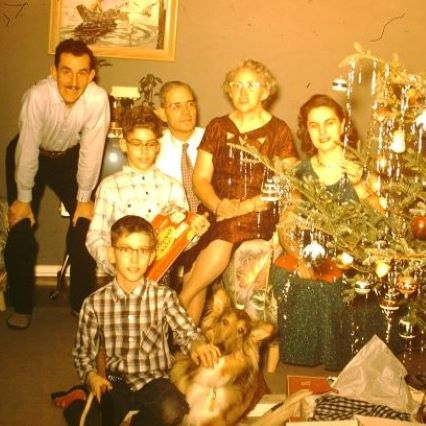
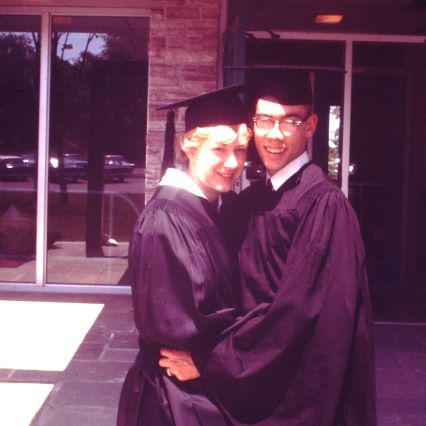

featured photographs

Jeanne Esther Pineau & Larry Fischer wedding:19XX
Jeanne&Larry Fischer 68th Anniversay: 2007
Jeanne&Larry Fischer family (w/children: Larry, Bill, Princess? &Grace&Henry Pineau) (1952)
Doris&Howard family (children: Sandy, Tom, John): 1952
Doris Mae Schoen & Howard Bochem:1946

Leonard Schoen and Mary King Sarah
Philip Bochem & Caroline Feurhelm
Sandy Bochem with her boys
Sandra Jean Bochem & Larry Fischer, Jr.:Aug 28, 1965
Mary Fishbeck and William Fischer: 1935

Ida May Bell Robbins (wife of John Walter Robbins): 19XX

John Walter Robbins (husband of Ida May Bell): 19XX

4Gens: Sarah Jones Sarah, Mary's mother, holding baby Sandra Jean Bochem; standing: right Mary King Sarah, Doris's mother; left: Doris Schoen Bochem, Sandra's mother
.JPG "Doris Schoen Bochem")
Happy 90th, Doris Schoen Bochem: 2013
Henry Joseph George Pineau (husband of Grace Robbins, father of Jeanne Fischer)
Augustin Henri Rene Pineau (husband of Marie Potelet, father of Henry Pineau, grandfather of Jeanne Fischer)

4Gens: Louise Meyer Bochem, Philip's mother, holding baby Sandra Jean Bochem; standing right: Philip Bochem, Howard's father; left: Howard Bochem, Sandy's father
Sandy and Larry college graduates
Grace Robbins Pineau (wife of Henry Pineau, daughter of Ida&John Robbins,mother of Jeanne Fischer)
Marie Josephine Potelet (wife of Augustin Henri Rene Pineau, mother of Henry Pineau, grandmother of Jeanne Fischer)

Jeanne Fischer, High School graduation: 1942
"Open house for Waukesha county's oldest triplets will be held Sunday from 2 to 5pm and from 7 to 9 at teh home of Miss Ida Bochem, 834 Oakland ave. The triplets, who will be 70, were the first triplets born in the county, in the town of Pewaukee. from left are Lester Bochem, 834 Oakland ave. Mrs.Herman Siewert, Eau Claire, and Philip, 1008 Lincoln Ave."
3Gens: Gary,Larry,Jeff,Bill,Sarah. sitting:Larry Sr., Jeanne